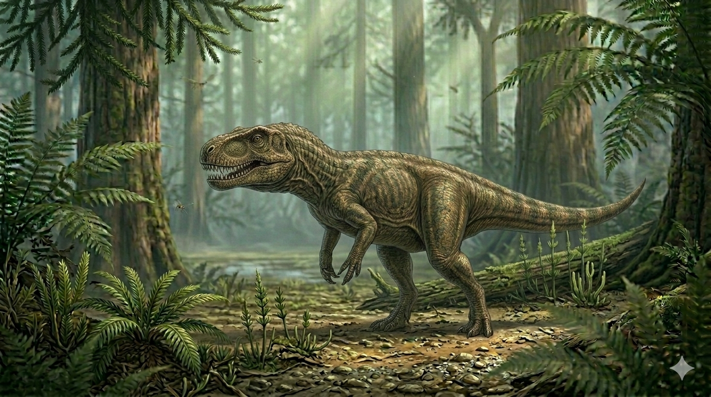

צינוגנתוס
The Triassic Wolf: Cynognathus crateronotus

Dossier // נתונים פיזיולוגיים וטקסונומיים
תקופת פעילות (Geological Era)
247 עד 237 מיליון שנה
תור הטריאס (Triassic) – תחתון עד תיכון
מסה גופנית (Weight)
25 עד 40 קילוגרם
המסה של טורף יבשתי בינוני-גדול (כמו זאב מצוי)
ממדים (Length)
1.2 עד 1.5 מטרים
מחרטום ועד קצה הזנב – גוף דחוס ושרירי
תפוצה גיאוגרפית (Pangea)
דרום אפריקה, ארגנטינה, אנטארקטיקה
הוכחה מרכזית לקיומה של יבשת-העל גונדוואנה (Gondwana).
סיווג אבולוציוני (Phylogeny)
סינאפסיד: קבוצת הצינודונטים (Cynodontia)
הצינודונטים הם הקבוצה הישירה ממנה התפתחו היונקים. הצינוגנתוס מייצג את שיא השכלול הטורף של שלב המעבר הזה.
01 // ניתוח אטימולוגי נרחב ומעמיק
| רכיב השם | שפת מקור | פירוש, מקור ומשמעות מורחבת |
|---|---|---|
| Cyno- | יוונית עתיקה (κύων - kyōn) | כלב / דמוי-כלב מציין את הדמיון המורפולוגי המדהים של הגולגולת לזו של טורפים יונקיים מודרניים. לראשונה נראית "לסת של כלב" בתוך שלד של יצור פרה-היסטורי. |
| -gnathus | יוונית עתיקה (γνάθος - gnathos) | לסת מתייחס למבנה הלסת החזק והמתוחכם ששינה את הבנת האבולוציה של מערכת הלעיסה בטבע. |
| crateronotus | יוונית עתיקה | גב חסון / חזק מאוד הלחם של *Krateros* (עוצמתי/חסון) ו-*Notos* (גב). תיאור של עמוד השדרה המסיבי והשרירי שתמך ביכולת הריצה והזינוק של הטורף. |
המשלחת המדעית: הארי גוביאר סילי (1889)
מטרות וסיבת המשלחת
הארי גוביאר סילי יצא לדרום אפריקה בשנת 1889 תחת מימון יוקרתי של ה-**Royal Society** (החברה המלכותית הבריטית). המשימה המדעית הייתה ברורה ונועזת: למצוא את "החוליה החסרה" (Missing Link) שתחבר בין זוחלים קדומים לבין מחלקת היונקים. סילי האמין שאגן הקארו מחזיק את המפתח להבנת התפתחות הלסת והדם החם, והוא יצא להוכיח זאת דרך ניתוח שלדים בשטח.
נסיבות הגילוי בליידי פרר
התגלית המשמעותית ביותר התרחשה באזור הצחיח והמרוחק של **ליידי פרר (Lady Frere)**. סילי וצוותו פעלו תחת חום כבד ותנאי שטח קשים, תוך שהם סורקים את תצורות הסלע של הטריאס. שם הם חשפו גוש סלע חול (Sandstone) מסיבי שהכיל אוצר פלאונטולוגי.
**מספר הפריטים ומצבם:** המשלחת חשפה **שלד אחד כמעט מושלם ומחובר לחלוטין (Articulated)** – נדיר ביותר עבור צינודונטים – וכן **לפחות 3 גולגולות נוספות** ברמות שימור שונות. העצמות היו כלואות בתוך סלע קשה כפלדה, מה שחייב משלוח של טונות של אבן ללונדון לצורך עבודת חילוץ שנמשכה חודשים בעזרת אזמלים עדינים.

סילי היה הראשון שהבין שהצינוגנתוס הוא המפתח למעבר ליונקים. ב-1895 הוא פרסם את תיאורו המדעי, שבו הדגיש את המבנה ההיברידי של השלד – גוף של זוחל עם ראש ושיניים של יונק.
02 // תזונה וביומכניקה: טורף העל של הטריאס
מכונת ההרג והלעיסה
הצינוגנתוס מילא את הגומחה האקולוגית של "זאב הערבות" של הטריאס. הוא היה טורף אקטיבי (Carnivore) שהתבסס על מהירות וזריזות.
**הטרודונטיה (שיניים מבדלות):** בניגוד לזוחלים, מערכת השיניים שלו הייתה מגוונת:
- **ניבים (Canines):** ארוכים וחדים להפליא לנעיצה בטרף ושיתוקו.
- **שיניים טוחנות (Post-canines):** בעלות בליטות מורכבות ("תלוליות") שאפשרו לו **לחתוך וללעוס** את הבשר – מהפכה שקיצרה את זמן העיכול.
**טרף מועדף:** הוא ניזון בעיקר מדיצינודונטים (כמו ה*קנמייריה*) שהיו איטיים ממנו, דו-חיים גדולים וזוחלים קטנים.
מהפכת הנשימה: החיך המשני
אחד הגילויים המדהימים בשלד של סילי היה ה**חיך המשני (Secondary Palate)**. זוהי מחיצת עצם המפרידה באופן מוחלט בין חלל האף לבין חלל הפה.
**המשמעות הביולוגית:** תכונה זו איפשרה לצינוגנתוס **לאכול ולנשום בו-זמנית**. לזוחלים רגילים אין את היכולת הזו (הם מפסיקים לנשום כשהם בולעים). יכולת זו היא עדות ישירה לקצב חילוף חומרים גבוה (Endothermic) ולצורך באספקת חמצן רציפה – סימן מובהק ל**דם חם** ולמעבר ליונקים.